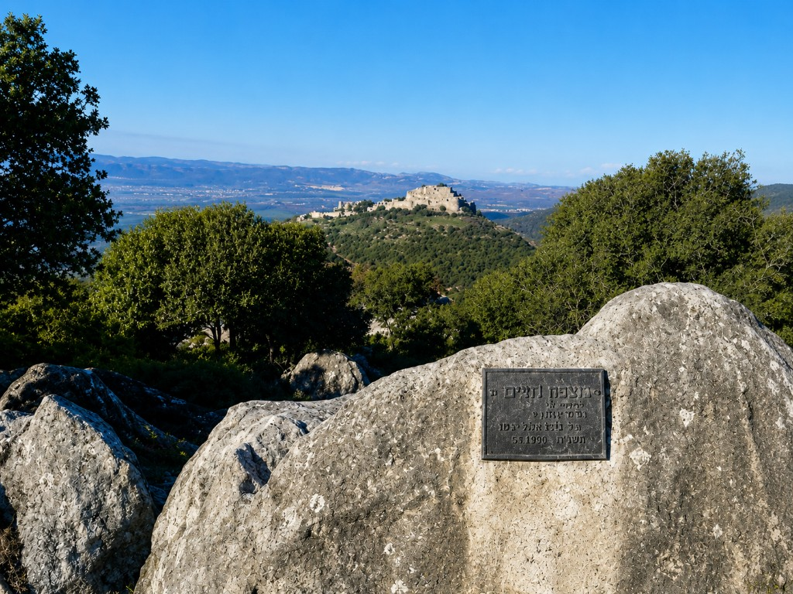

חמ״ל פצועים
ליווי הפצועים ומשפחותיהם מרגע הפציעה ולאורך השיקום הארוך — סיוע משפטי, כלכלי, רפואי ונפשי, בשיתוף מערך הנפגעים של היחידה.

הבית של בוגרי יחידת אגוז, המשפחות השכולות והפצועים. מאז ה־7 באוקטובר התגייסנו כולנו למשימה אחת — לתת מעטפת של ליווי, תמיכה וסיוע ללוחמי אגוז ולמשפחותיהם, בכל שלב וצומת בחיים.
עמותת אגוז – הסיירת הצפונית הוקמה לאחר מלחמת יום הכיפורים, בידי בוגרי היחידה והמשפחות השכולות. מטרות העמותה הן טיפוח היחידה, לוחמיה ובוגריה, והנצחת חללי היחידה. חברי העמותה פועלים בהתנדבות, על פי כישוריהם ובזמנם הפרטי.

העמותה פועלת מהרגע שהלוחם מגיע ליחידה ולאורך כל חייו — בשדה, בשחרור, בשיקום ובזיכרון.
ליווי לאורך המסלול ומתן שי למסיימי המסלול, שימור המורשת והמור״קים, ודאגה לחיילים המתמודדים עם קשיים כלכליים.
סדנאות ״שחרור נעים״ לקראת האזרחות, ליווי בשחרור, סיוע בהשמה לעבודה וליווי הפצועים לאורך השיקום.
מפגשי בוגרים ורשת הנטוורקינג של היחידה — סיוע במציאת עבודה, שותפויות עסקיות ויזמות חברתית.
תחזוק אתר ההנצחה בקלעת נמרוד, יום משפחות שנתי עם היחידה, ספר מורשת ותמיכה במשפחות השכולות.
סיכום של התקופה האחרונה — חודשים של גיוס מתמשך של מתנדבים, תורמים ובוגרים, סביב מטרה אחת: לתת מענה מלא ללוחמי אגוז ולמשפחותיהם.
כשהבנו שהצרכים רבים ונדרש סיוע דחוף — הקמנו חמ״לים ייעודיים, כל אחד עם משימה ברורה.
ליווי הפצועים ומשפחותיהם מרגע הפציעה ולאורך השיקום הארוך — סיוע משפטי, כלכלי, רפואי ונפשי, בשיתוף מערך הנפגעים של היחידה.
מעטפת וליווי למשפחות הנופלים, לאורך כל ימות השנה.
אספקת ציוד מגן וציוד רפואי מתקדם ללוחמים בחזית.
סיוע לוגיסטי ותפעולי ללוחמים ולמשפחות בעורף.
תמיכה נפשית, קבוצות עיבוד וליווי של מטפלים מומחים.
בכל פצוע אנו רואים שליחות אישית. הלוחמים הפצועים עוברים טיפול ושיקום ומקבלים את הטיפול הרפואי הטוב ביותר, והעמותה משלימה כל מה שטרם קיבל מענה — בריאות הגוף והנפש, ליווי משפטי וכלכלי, ומעטפת רחבה למשפחות.
סדנת הכנה לאזרחות לכל מחזור משוחרר — מפגש עם מעסיקים מובילים, הרצאות הכנה ללימודים, וקבלה חמה אל החיים שאחרי השירות.
סיוע במימון שכר לימוד לאורך ארבע שנים לחיילים המתמודדים עם קשיים כלכליים, לצד התנדבות וחונכות לחיילים בודדים.
מיזם חברתי לפיתוח קריירה לצעירים מהפריפריה, שבו בוגרי היחידה מתנדבים כמנטורים ומרצים ומלווים כל משתתף אישית.
אתר ההנצחה ממוקם בלב שמורת החרמון, ובמרכזו אמפיתיאטרון שאבני הזיכרון מקיפות אותו. כל אנדרטה קודדה בקוד שניתן לסרוק — ומוביל לעמוד נחיתה של החלל, להכיר, לקרוא, לצפות בסרטונים ולהדליק נר לזכרו.

תרומתכם מממנת ליווי פצועים, תמיכה במשפחות שכולות, מלגות וסיוע לבוגרי היחידה לדורותיהם. עכשיו, כשהצורך גדול מתמיד — זה הזמן להושיט יד.
רוצים להזמין אותנו למשלחת אליכם? בואו נדבר — ונבנה יחד מפגש שמחבר בין הלוחמים, הבוגרים והתומכים בכל מקום.
דברו איתנו